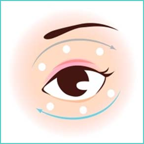

Q： “黑眼圈是天生的，即使用眼霜也没用？”
回忆一下，在你的儿童时代就已经有黑眼圈了吗？如果是，那么很不幸，你确实属于遗传因素！黑眼圈分好几种:
1.青色黑眼圈
它是由于血液循环不畅和眼部皮肤过薄造成的，这一类多半是先天的，通常发生在有过敏性鼻炎的MM身上，但配合眼霜及保养手法会有改善
2.黑色黑眼圈
这类属于胶原蛋白流失等造成的老化问题，下眼睑变薄、松弛下垂形成阴影，看上去就像是黑眼圈，这类黑眼圈要配合使用减缓衰老效果的眼霜
3.褐色黑眼圈
这种纯属于色素沉积，可选择淡化黑眼圈有美白功能的眼霜
Q：“用了眼霜，经常会长脂肪粒，这是为什么啊？”
我们眼周的肌肤其实非常薄，如用量太多，不能被吸收，就会加重肌肤的负担从而形成脂肪粒、建议每次只取两颗绿豆大小用量即可。另外需特别注意，我们要根据眼周肌肤年龄选择合适的眼霜。年轻状态的肌肤，不需要过度滋养，解决水分不足的问题就可以了，若直接使用营养丰富的质地厚重的眼霜，营养会造成堆积，形成脂肪粒。而在眼周肌肤出现第一道纹路时，就要开始使用具有滋养、修复紧致效果的眼霜啦。在这里也要提醒一下亲哦，出现脂肪粒后，自己不要处理，很容易弄伤眼部，可以去寻求医生专家处理。
Q：“眼霜怎么涂才有效果？”
1.无名指沾取少量眼霜，在眉骨处和眼睑下方点按均匀。
2.无名指绕眼部打圈涂抹，至眼霜吸收（眼睑由外眼角朝内眼角的方向，
眉骨下方由内眼角至外眼角）
这是眼霜的基本涂抹方式，建议用手指像弹钢琴一样轻拍下眼睑，针对细纹，可以用“剪刀手”从眼尾往太阳穴部位提拉哦。